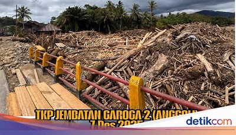
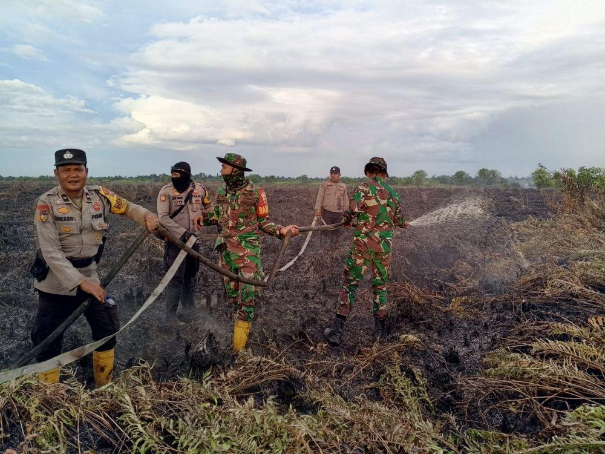
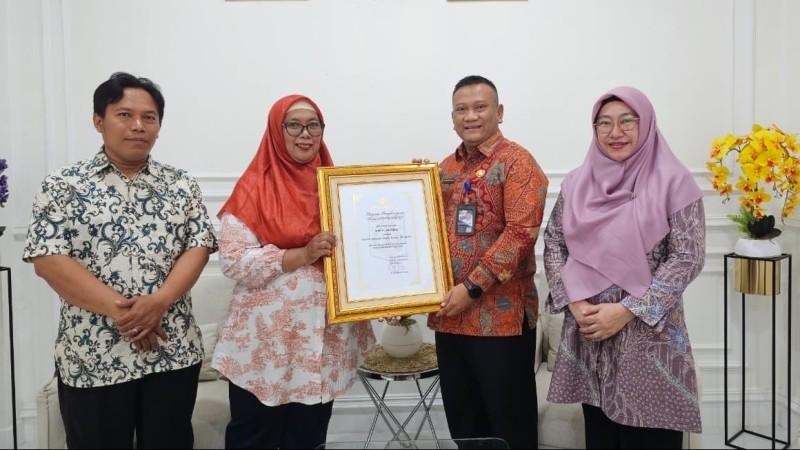
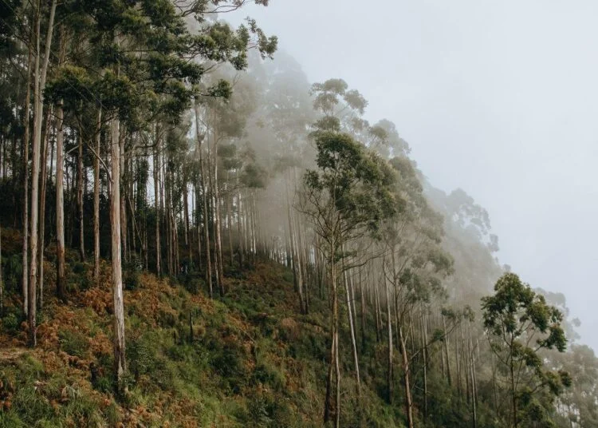

GloKarbon: Visualisasi Jejak Karbon di Pulau Jawa
Peta Interaktif, Kalkulator Pribadi, dan Pusat Edukasi untuk Kabupaten/Kota di Jawa
Peta Jejak Karbon Jawa
Visualisasi interaktif tingkat jejak karbon di seluruh kabupaten/kota Jawa
Berita & Aksi Lingkungan
Update terbaru seputar mitigasi perubahan iklim dan aksi nyata di Indonesia

DLH Garut dan Warga Kompak Hijaukan Puncak Rabbany dengan 700 Pohon
Kasus Gelondongan Kayu Terbawa Banjir di Garoga Anggoli Naik Penyidikan
KLHK akan Tindak Tegas Perusahaan Lalai Cegah Karhutla

Musim Tangkap Aktivis Berlanjut Usai Pegiat Lingkungan Ditahan
MAN 4 Jakarta Raih Adiwiyata Nasional wujud Komitmen Madrasah
Kerusakan Hutan dan Strategi Mitigasi Bencana Membangun Lingkungan
Pusat Edukasi Karbon & Iklim
Video edukatif untuk meningkatkan pemahaman tentang jejak karbon
Apa Jadinya Kalo Gak Ada Karbon Dioksida?
Mengapa gas karbon dioksida sangat penting bagi bumi, namun juga berbahaya jika berlebihan.
Yuk Ketahui Pentingnya Perubahan Iklim!
Pembahasan pentingnya perubahan iklim, dampaknya, dan peran manusia.
Mengenal Daur Karbon, Penyeimbang Ketersediaan Karbon di Bumi
Pelajari siklus alami perputaran karbon di bumi dan fungsinya sebagai penyeimbang alam.
Yuk, Jaga Lingkungan Tetap Hijau! 🌿 | Tips Ramah Lingkungan untuk Anak-Anak
Tips praktis dan edukatif mengenai gaya hidup ramah lingkungan.
Jejak Karbon dan Upaya Pengurangannya
Materi tentang dampak jejak karbon dan langkah-langkah konkret untuk menguranginya.
Bagaimana Pemanasan Global Terjadi?
Penjelasan ilmiah yang mudah dipahami tentang proses terjadinya pemanasan global.
Glosarium Karbon Pulau Jawa
Cari kabupaten/kota di Pulau Jawa untuk melihat jejak karbon regional
Ketik nama wilayah untuk melihat profil karbon regional
Kalkulator Jejak Karbon Pribadi
Hitung emisi bulanan Anda berdasarkan konsumsi utama (Kg CO2e)
Masukkan Data Konsumsi Bulanan
Visualisasi Emisi & Rekomendasi
Tekan "Hitung Jejak Karbon Saya" untuk melihat total emisi dan rekomendasi
Quiz Hunter: Uji Pengetahuan Karbon!
Jawab 5 pertanyaan seputar jejak karbon dan lingkungan
Siap Berburu Pengetahuan?
Uji pemahaman Anda tentang jejak karbon dengan 5 soal menarik.
Tentang Kami
Pesan dan Kesan Tim Pengembang
"Kegiatan kokurikuler ini sungguh seru dan bermanfaat, di mana kami mendapatkan pengalaman berharga dalam membangun Glokarbon, website glosarium dan kalkulator jejak karbon untuk Jawa Timur. Kami merasa kompetensi keahlian kami meningkat pesat dan pada saat yang sama, kesadaran iklim kami pun semakin kuat. Kami sangat berharap **Glokarbon dapat terus dikembangkan menjadi rujukan utama bagi masyarakat Jawa Timur dalam mengukur jejak karbon dan mengambil aksi nyata, serta semoga kegiatan pembelajaran berorientasi solusi seperti ini terus dilaksanakan untuk memotivasi siswa lainnya.**"
💡 Visi GloKarbon (Singkat)
Mendorong Jawa Timur menuju masyarakat sadar iklim dan rendah karbon melalui akses mudah ke informasi dan alat perhitungan emisi.
✅ Misi GloKarbon (Singkat)
- Edukasi: Menyediakan Glosarium Karbon (Glokarbon) yang ringkas dan kontekstual untuk meningkatkan literasi iklim di Jawa Timur.
- Kalkulasi: Mengoperasikan Kalkulator Jejak Karbon yang mudah digunakan untuk mengukur emisi individu, rumah tangga, dan UMKM lokal.
- Visualisasi: Menyajikan data jejak karbon dalam bentuk peta interaktif untuk pemahaman yang lebih baik.
- Inspirasi: Menjadi media berita terpercaya yang menginspirasi aksi nyata mitigasi perubahan iklim di tingkat komunitas.